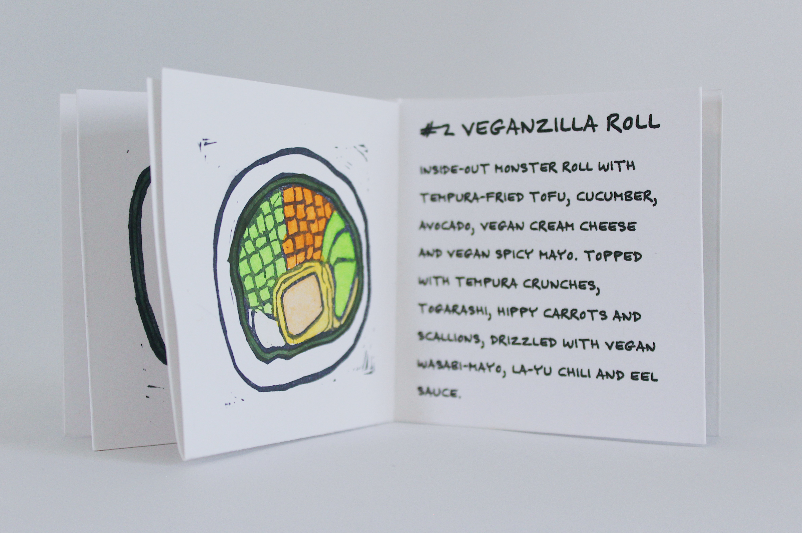
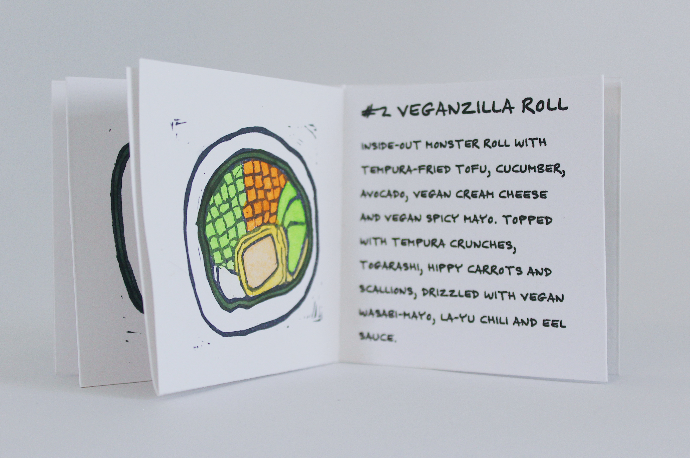
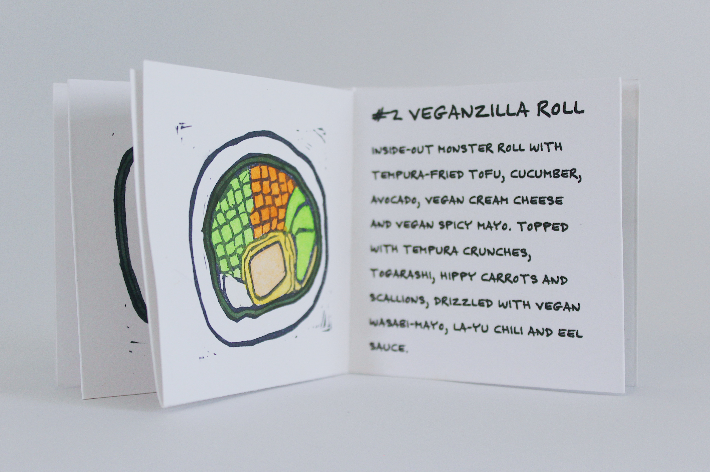

A zine covering the top six vegan and vegetarian sushi rolls at Sticky Rice in Richmond, VA.
Sticky Rice in Richmond, Virginia has a unique selection of veggie sushi rolls including the Veganizilla Roll, a vegan version of a monster roll. My top six rolls were carved into rubber blocks, stamped into a tiny 2.75”x2.75” zine, and painted with gouache alongside a description of the roll itself. A total of 15 handcrafted zines were made.
Rubber blocks carved and stamped with India ink, hand painted with gouache, typeset in Indesign, 2.75”x2.75” card stock, pva glue
